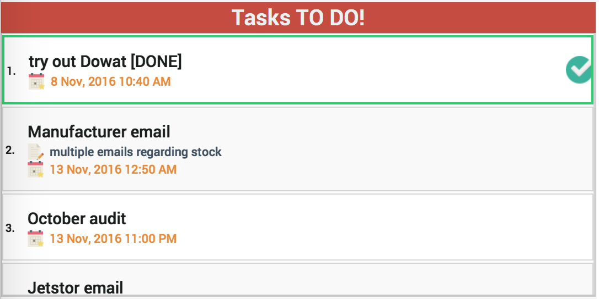
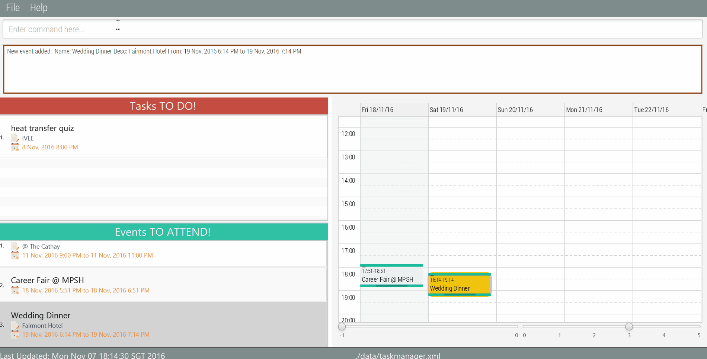
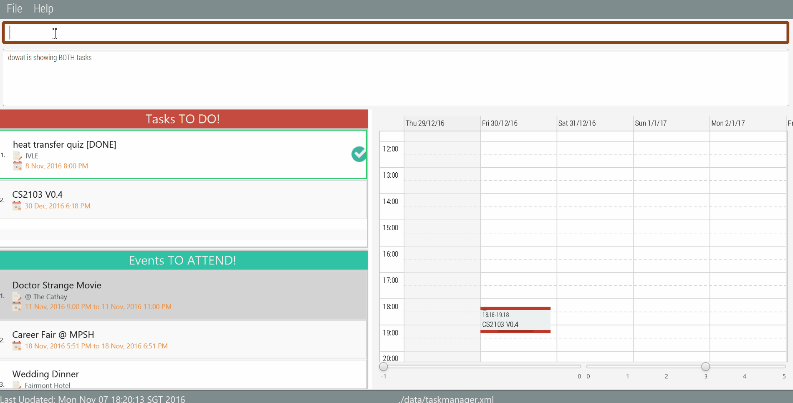

User Guide
Quick Start
-
Ensure you have Java version
1.8.0_60or later installed in your Computer.Having any Java 8 version is not enough.
This app will not work with earlier versions of Java 8. Download the latest
Dowat.jarfrom the 'releases' tab.- Copy the file to the folder you want to use as the home folder for your task book.
-
Double-click the file to start the app. The GUI should appear in a few seconds. Refer to UI Control for a more detailed walkthrough of various UI components.

Type the command in the command box and press Enter to execute it.
e.g. typinghelpand pressing Enter will open the help window.- Some example commands you can try:
-
add try out Dowat /by tomorrow: will add a task into the application. The task will be shown in the list and calendar as highlighted.

-
mark 1: after you are done with a task, simply mark it off from the list. Tasks will be sorted so you can easily find those tasks with closer deadlines at the top of the list! -
list /t /a: you can also lists all tasks that are completed, and shown as below.
 -
undo: if you accidently do anything wrong, you can undo the modifications also! -
edit /t 1 /by one hour laterEdit any field you need (description, name, deadline, event duration ...) with the edit command. Where the index1refers to the index of the task / event in the respective list.
😉 Check out the Features for a complete set of commands you can use!
-
UI Control
Event/Task Card
The default card is shown as below:

A task that is overdue will be highlighted and shown as below:

A task/event that is due on today will be highlighted and shown:

A task/event that is completed or passed will be hidden from the list by default, and shown as below.

Calendar Features
The events and tasks will be both synchronised to your calendar. You are not able to do any modification through the calendar.
-
Select on an event /task
Your selection on task /event will be sync to calendar. When you select a task /event, the calendar will jump to the correct time frame to show the task /event as highlighted.
-
Current time
The red line shows the current time.
-
Toggle Calendar view
With the
showcalendar, you can jump to any valid time frame such as "today, tomorrow 9pm". You can also toggle the view between week view(5 days by default) and day view. See more on show command

Traversing between Windows
The four main windows in which you can traverse are:
- Command Box
- Result Display Panel
- Task Panel
- Event Panel
By utilizing the TAB key, you are able to switch between the different windows in the above-mentioned order. The order of traversal is descending down the list before it loops back to the beginning.
The window in which you are currently on is shown by a brown border highlight. An example of window traversal is shown in the figure below.
Command Box Features
When the Command Box is selected, it has 2 main features:
-
Clearing the Command Box
Pressing the DELETE key will clear the Command Box of its text content. This allows for easy clearing of commands.

-
Accessing past History of Commands
Pressing the UP key will access the previous command in the history and will copy it into the Command Box. Pressing the DOWN key will access the next command in the history and will copy it into the Command Box.
The Command history resets itself after each session of usage (i.e exit the program). A Command is only added into the Command history when it is executed by the Command Box (i.e ENTER key press).

Result Display Panel Features
When the Result Display Panel is selected, it has a scrolling feature where the UP and DOWN key would be able to control the scroll bar within the window.
This prevents the need to use the mouse wheel for scrolling.

Task and Event Panel Features
When the Task or Event Panel is selected, it has a scrolling feature where the UP and DOWN key would be able to control the scroll bar within the window. This prevents the need to use the mouse wheel for scrolling. 
Features
Adding a task
Adds a task to Dowat
Format: add TASK_NAME [/desc DESCRIPTION] [/by DEADLINE_DATETIME]
Words in
UPPER_CASEare the parameters, parameters will follow behind their corresponding keyword. With the exception ofTASK_NAME, all other parameters are optional. The order of parameters are not fixed.DEADLINE_DATETIMEcan be entered in any natural language format. For date, entering words like today, tomorrow and day after are recognised. Dates entered in numeric form must be in the format of MM-DD-YYYY. Only valid dates are recognised correctly. For time, entering 7pm, 1900 or 19.00 are recognised. If no time is entered, it is assumed to be due at 23:59 hours.
Examples:
-
add CS2103 V0.4 /by 30 Dec
Adds a task "CS2103 V0.4" with deadline "23:59 30 December 2016" -
add heat transfer quiz /desc IVLE /by tomorrow 8pm

Adding an event
Similar to adding a task, you can also add an event to Dowat
Format: add EVENT_NAME /from START_DATETIME [/to END_DATETIME] [/desc DESCRIPTION]
With the exception of
EVENT_NAMEandSTART_DATETIME, all other parameters are optional. The order of parameters are not fixed.START_DATETIMEandEND_DATETIMEcan be entered in natural language. For date, entering words like today, tomorrow and day after are recognised. Dates entered in numeric form must be in the format of MM-DD-YYYY. Only valid dates are recognised correctly. For time, entering 7pm, 1900 or 19.00 are recognised. If no start time is entered, it is assumed to start at 00:00 hours. IfEND_DATETIMEis not provided, the start and end dates will be the same, the default timing will be set 1 hour apart.
Examples:
-
add CS2103 Exam @ MPSH3 /from 30 December 4pm /to 6pm
Adds an event "CS2103 Exam @ MPSH3" with duration from "16:00 30 December 2016" to "18:00 30 December 2016" -
add Doctor Strange /desc @ The Cathay /from friday 7pm /to friday 9pm

Listing tasks or events
Shows a list of uncompleted tasks. Or shows a list of all tasks.
Shows a list of upcoming events. Or shows a list of all events.
Or shows a list of both upcoming events and uncompleted tasks, or all items.
Format: list [/t] [/e] [/a]
Tasks that are marked completed will not be shown by default. An
/aoptional flag will request the TaskBook to list all, both completed or upcoming.
Examples:
-
list /t
Lists tasks that are uncompleted. list /t /a
All tasks will be shown.list /e
Lists events that are upcoming.list /e /a
All events will be shown.listorlist /t /e
Lists both upcoming events and uncompleted tasks.-
list /aorlist /t /e /a
Lists everything in the app.

Editing a task
Edits an existing task in Dowat
Format: edit /t INDEX [/name NEW_NAME] [/desc NEW_DESCRIPTION] [/by NEW_DEADLINE]
Edits the task at the specified
INDEX. The index refers to the index number shown in the most recent listing of tasks. Edits at least 1 field of the task. This includes name and/or description and/or deadline. The order of the fields are flexible.NEW_DEADLINEcan be entered in natural language. Edited tasks are automatically marked as uncompleted.
Examples:
-
edit /t 1 /desc CS2103 Project /by 12-30-16
Edits the description of the 1st task to “CS2103 Project” and the deadline to "30 December 2016" -
edit /t 1 /name Heat Transfer Test /by today 6pm /desc @ E6 LT3

Editing an event
Edits an existing event in Dowat
Format: edit /e INDEX [/name NEW_NAME] [/desc NEW_DESCRIPTION] [/from NEW_START_DATETIME] [/to NEW_END_DATETIME]
Edits the event at the specified
INDEX. The index refers to the index number shown in the most recent listing of events. Edits any number of fields of the event. This includes name and/or description and/or start time and/or end time. The order of the fields are flexible.NEW_START_DATETIMEandNEW_END_DATETIMEcan be entered in natural language.
Examples:
-
edit /e 1 /desc CS2103 Workshop /from 10-03-16 0000 /to 10-05-16 2359
Edits the description of the 1st event to “CS2103 Workshop” and the duration to the period of 0000 hours, 3-10-16 to 2359 hours, 5-10-16 -
edit /e 1 /desc @ Serangoon Nex

Marking a task as completed
Mark an existing task as completed in Dowat.
Format: mark INDEX
Marks the task at the specified
INDEXto change its completion status. The index refers to the index number shown in the most recent listing of tasks. Marking an uncompleted task will change its status to completed while marking a completed task will change its status to uncompleted. Completed tasks will not be shown in the list of tasks in Dowat. Uncompleted tasks can be shown when listing all tasks. Marked tasks in the current session can be reverted with theundocommand. An event cannot be marked completed.
Examples:
-
mark 1
Marks the 1st task in the last shown listing as completed.
Deleting a task/event
Deletes an existing task/event from Dowat storage completely.
Format: delete /t|/e INDEX
Deletes the task/event at the specified
INDEXin the most recent task/event listing. Deleted tasks or events will not be shown even withlist /t|/e /acommand. Deleted tasks or events in the current session can be recovered with theundocommand.
Examples:
-
delete /e 2
Deletes the 2nd event in the most recent event listing. 
Selecting a task/event
Selects an existing task/event from the last shown task/event list.
Format: select /t|/e INDEX
Selects the task/event at the specified
INDEXin the most recent task/event listing.
Examples:
-
select /t 1
Selects the 1st task in the most recent listing
Changing the save location
dowat data will saved in a file called dowat.txt in the project root folder by dafault or the file path is not specified. You can change the location by specifying the file path as a program argument. New folders with the file will be auto-created as long as given directory is valid.
Format: save FILEPATH
FILEPATH (must be valid)
Examples:
save C:\-
save C:\Users\Computing\Desktop\CS2103
Viewing help
You can refer to the user guide via a pop-up window with the help command. Or you can specify a command which you need help for using [KEY_WORD] flag.
List of available [KEY_WORD] for help:
- add
- delete
- find
- list
- select
- mark
- undo
- show
- save
- clear
- exit
Format: help [KEY_WORD]
A list of commands available for help is also shown if you enter an incorrect command.
Examples:
help add
Undo modifications
You can go back to historical versions of Dowat with the use of undo commands. Only commands that modify Dowat in the same session will be restored. Any versions of current session will not be accessible after restarting Dowat.
Format: undo
Finding for events or tasks
With the find command, you can find for tasks or events which contain some keywords in their name as well as in their descriptions.
Format: find KEYWORD [/ MORE_KEYWORDS]
Examples:
-
find cs2103Shows tasks and events which have 'CS2103' (ignoring cases) in their names or description -
find cs2103 / projectShows tasks and events which have 'CS2103' or 'project' (ignoring cases) in their names or description, or have similar words
You can supply the /power flag to indicate a more powerful search, where events or tasks will be found as long as they contain some of the keywords.
Format: find KEYWORD [/ MORE_KEYWORDS] /power
When finding items, two strings are matched if they are similar, where they have a distance of less than 2. Refer to FAQ for a detailed definition of word distance.
KEYWORDSare case insensitive. Events/Tasks which contain at least one keyword in their names will be returned. Minor typos are accepted.
Examples:
-
find cs210X /powerReturns any tasks or events having which contain similar words of "cs210X" in the descriptions or names.

Clearing of tasks
Clears all completed tasks or clears all tasks.
Format: clear /t [/a]
An
/aoptional flag will request Dowat to clear all tasks, both completed and uncompleted tasks. Without the optional flag, Dowat will only clear all completed tasks. Cleared tasks in the current session can be recovered with theundocommand.
Examples:
-
clear /t
Clears all completed tasks. -
clear /t /a
Clears all completed and uncompleted tasks.

Clearing of events
Clears all completed events or clears all events.
Format: clear /e [/a]
An
/aoptional flag will request Dowat to clear all events, both past and upcoming events. Without the optional flag, Dowat will only clear all past events. Cleared events in the current session can be recovered with theundocommand.
Examples:
-
clear /e
Clears all past events. -
clear /e /a
Clears all past and upcoming events.
Clearing of tasks and events
Clears all completed tasks and past events or clears all tasks and events.
Format: clear [/a]
An
/aoptional flag will request Dowat to clear all tasks and events. Without the optional flag, Dowat will only clear all completed and past events. Cleared tasks and events in the current session can be recovered with theundocommand.
Examples:
-
clear
Clears all completed tasks and past events. -
clear /a
Clears all tasks and events.
Toggle calendar view
Toggle the view of calendar and focus to certain time time as user specified.
Format: show TIME [/day|/wk]
TIME parameter indicates the time you wanna jump to in the calendar, it can be "today", "tomorrow", etc... It follows the general rule of date and time of the rest of applications. An optional
/dayor/wkflag indicates which view mode you wanna toggle to. The default will be week view.
Examples:
-
show today /day
It will focus on the current time of today's calendar in the day mode. -
show next week 8pm /wk
It will focus on the 8pm time frame of the next week's calendar.
Exiting the program
Format : exit
FAQ
Q: How do I transfer my data to another Computer?
A: Install the app in the other computer and overwrite the empty data file it creates with
the file that contains the data of your previous Dowat.
Q: What is word distance?
A: It is the Levenshtein distance between two words is the minimum number of single-character edits (i.e. insertions, deletions or substitutions) required to change one word into the other.
Command Summary
| Command | Format |
|---|---|
| Add Task | add TASK_NAME [/desc DESCRIPTION] [/by DEADLINE_DATETIME] |
| Add Event | add EVENT_NAME /from START_DATETIME [/to END_DATETIME] [/desc DESCRIPTION] |
| List Task or Event | list [/t|/e] [/a] |
| Edit Task | edit /t INDEX [/name NEW_NAME] [/desc NEW_DESCRIPTION] [/by NEW_DEADLINE_DATETIME] |
| Edit Event | edit /e INDEX [/name NEW_NAME] [/desc NEW_DESCRIPTION] [/from NEW_START_DATETIME /to NEW_END_DATETIME] |
| Mark Task | mark INDEX |
| Delete Task or Event | delete /t|/e INDEX |
| Select Task or Event | select /t|/e INDEX |
| Save | save FILEPATH |
| Help | help [COMMAND] |
| Undo | undo |
| Find | find KEYWORD [/ MORE_KEYWORDS][/power] |
| Clear Tasks or Events | clear /t|/e [/a] |
| Clear Tasks and Events | clear [/a] |
| Show Day/Week view of the calendar of certain time | show today [/day|/wk] |
| Exit | exit |